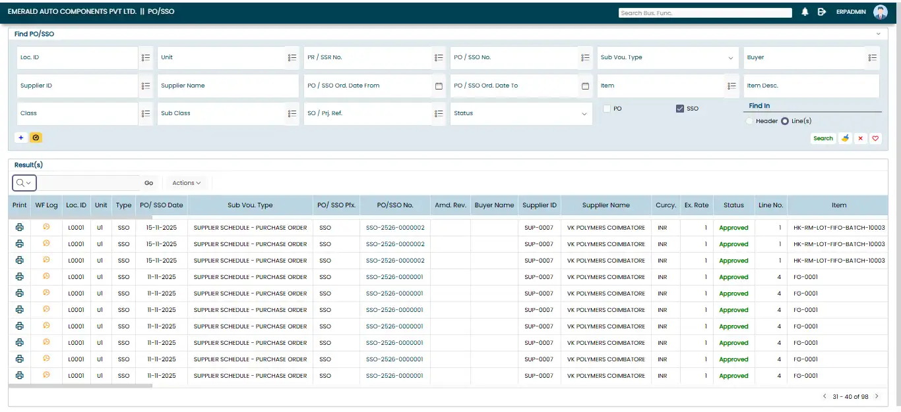
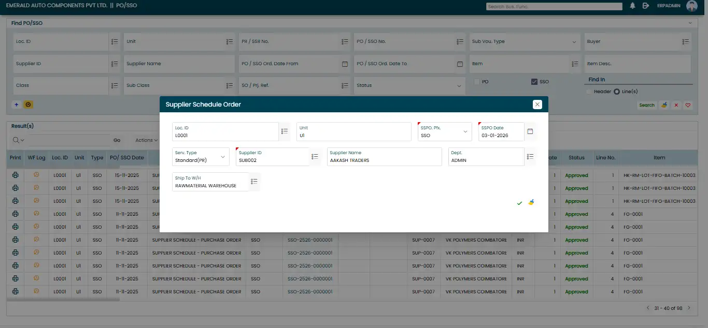
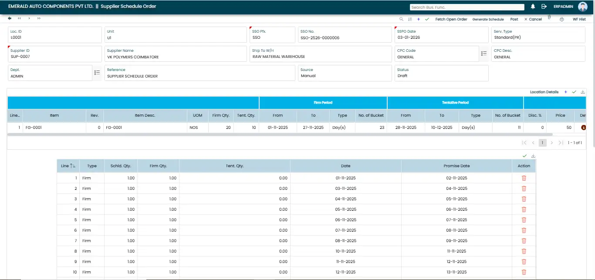

<div data-category="Purchase Order" data-title="Supplier Schedule Order" data-updated="December 01, 2025" data-contributors="RoadmapIT" data-breadcrumb="Home,Purchase Order,Supplier Schedule Order">
  <div class="page-content">
    <p>A Direct Supplier Schedule Order allows Business Units to directly issue firm purchase orders to suppliers based on specified delivery schedules.</p>

    <h5>Navigation path:</h5>
    <p class="fs-6">Supply Chain \ Purchasing \ Transaction \ Supplier Schedule Order</p>

    

    <ul style="list-style-type: none; align-content: center">
      <li class="mouse-icon">Search screen displays the list of Supplier Schedule orders with the relevant details and its status.</li>
      <li class="mouse-icon">Click on search to filter all the records.</li>
      <li class="mouse-icon">User can filter the respective documents by entering the search parameters at the header.</li>
      <li class="mouse-icon">Using search, system displays the results relevant to the search parameters entered.</li>
      <li class="mouse-icon">On clicking; the corresponding transaction record will be displayed.</li>
      <li class="mouse-icon">Using <i class="bi bi-eraser text-secondary"></i> icon, entered search parameters can be cleared.</li>
      <li class="mouse-icon">To close the screen, use <i class="bi bi-x-lg text-danger"></i> icon.</li>
      <li class="mouse-icon">
        By Clicking the
        <i class="bi bi-plus fs-4 mx-2 text-primary"></i>
        Add button we can create new supplier schedule Orders by entering all the mandatory fields displayed in the Add dialog.
      </li>
    </ul>

    

    <ul style="list-style-type: none; align-content: center">
      <li class="mouse-icon">Choose the location and Unit field is auto updated.</li>
      <li class="mouse-icon">Choose the Doc Prefix.</li>
      <li class="mouse-icon">Choose the Ship to Warehouse and Department name in LOV.</li>
      <li class="mouse-icon">
        Click
        <i class="bi bi-check-lg fs-4 mx-1 text-success"></i>
        button, supplier schedule order is created and control navigates to Transaction screen.
      </li>
    </ul>

    

    <ul style="list-style-type: none; align-content: center">
      <li class="mouse-icon">Fetch the item in fetch open order field.</li>
      <li class="mouse-icon">Use cancel button to cancel the document.</li>
      <li class="mouse-icon">Click Generate the schedule and check the schedule details generated.</li>
      <li class="mouse-icon">Click post to post the document.</li>
      <li class="mouse-icon">To approve the document, Navigate to the Workflow approvals screen.</li>
      <li class="mouse-icon">
        Click on View details
        <i class="bi bi-info-circle text-primary"></i>
        to view the specific document.
      </li>
      <li class="mouse-icon">Screen navigate into query screen to check the details.</li>
      <li class="mouse-icon">After click the close button document navigate into Approval screen.</li>
      <li class="mouse-icon">Choose the Approval/forward/Return button field and click Process button required process performed.</li>
    </ul>
  </div>
</div>
